未確定事項と判断してほしい点
ここだけが判断です。ほかの節は、決定済みの情報です。原稿とネタ案が食い違うところは原稿を画面に置き、選択肢を A／B で残しています。
- 1時間の見せ方。A（現行）：画面は「6時間」「20分ほど」。帯が縮み、灰色の線はなくなった長さの比喩。タイムコードにはしない。B：ネタ案の「6:00:00」から「0:20:00」。原稿は「ほど」なので、測った時刻に見える。該当：カット03
- 2完成の表記。A（現行）：「完成の、100」。原稿の「完成形の100」。測定した達成率ではない。B：ネタ案の「100%」。測定値に見える。該当：カット05
- 38割の見出し。A（現行）：同じ8割でも、使う人で結果が変わる。原稿は、出力の質は指示する人の目と経験で決まると書いている。B：ネタ案の「AIの8割は誰でも出せる。残り2割が仕事」。原稿の「同じ道具を渡しても同じものは出ない」と食い違う。該当：カット06
- 403の生成動画。A（現行）：タイムラインのモーショングラフィックス。生成しない。B：フィルムが流れ込み、数本だけ並ぶ4秒の映像を、03の全面インサートにする。未承認。クレジットは未確認。承認後に企画側が用意する。該当：差し替え候補
この動画で伝える一文
「AIの仕組みを渡せば、誰が使っても同じ成果が出る」と思っている人に、成果を決めるのは仕組みそのものより、使う人の判断だと伝え、同じ8割でも判断を手放さない人が仕上げれば届き、経験のない人が触ると崩れる、だから仕組みは外に出さず成果物で渡す、という本人の結論を残す。
残る気持ちは、判断と責任は手元に残り、成果物で渡した方が作った人の価値を守れる、という本人の確信です。全員の仕事がこれで成功する、という話にはしません。6時間、20分ほど、8割、2割、100は、原稿の言い方です。品質の測定値ではありません。
視聴者
AIで仕事の仕組みを作り、渡せば相手も同じ成果が出ると思っている人。仕組みだけ納品すれば足りると思っている人。見終わったあと、誰が使うかを先に決め、判断は手放さず、成果物で渡す、という本人のやり方を持って帰れる人。
構成と尺
声は経緯、留保、結論を運びます。文字は決め語と、短い留保です。図は「6時間が20分ほどへ縮む」「8本にプロが2本足して100で止まる」「同じ8本が崩れる」を運びます。説明の全文は画面に載せません。
尺はナレーション案の字数から決めました。声 590字、画面の文字 222字（空白と改行を除く。句読点は数える）。声の見積もりは 590字 ÷ 5.6字/秒 ≒ 105秒です。5.6字/秒は、直前の作品でナレーションの実測がおよそその速さだったことによる目安です。図を見る間を足して本編 130秒、エンドロゴ 5.5秒で 2分15.5秒。7字/秒は画面を読む目安で、声の尺には使っていません。等速で読む時間と見る時間が足りるかは、制作側の再生で判断します。実速再生は未確認です。
01の思い込みと、02の「使う人の判断」、10の「判断は、手放さない。」だけで、同じ主張が伝わることを確かめました。尺が足りなければ、04の順番の説明から削ります。05の留保、06の崩れ、07の条件、08の納品、10の結論は残します。
| カット | 区間 | 役割 | 声／画面 |
|---|---|---|---|
| 01 渡せば、同じ成果。 | 0:00–0:10（10秒） | 思い込み | 44字／9字 |
| 02 使う人の、判断。 | 0:10–0:21（11秒） | 主張 | 52字／22字 |
| 03 6時間が、20分ほどに。 要判断 1 | 0:21–0:37（16秒） | 根拠の見せ場 | 66字／10字 |
| 04 先に、集める。 | 0:37–0:47（10秒） | 根拠 | 45字／34字 |
| 05 8割に、2割。 要判断 2 | 0:47–1:00（13秒） | 根拠 | 54字／34字 |
| 06 同じ8割が、崩れる。 要判断 3 | 1:00–1:15（15秒） | 主張の見せ場 | 62字／11字 |
| 07 誰が、使うか。 | 1:15–1:27（12秒） | 留保 | 53字／31字 |
| 08 仕組みは、出さない。 | 1:27–1:41（14秒） | 主張 | 68字／24字 |
| 09 プロにしか、見えない。 | 1:41–1:54（13秒） | 留保 | 65字／21字 |
| 10 一心同体で、組む。 | 1:54–2:10（16秒） | 本人の結論 | 81字／26字 |
| 11 エンドロゴ | 2:10–2:15.5（5.5秒） | 制作表示 | 0字／0字 |
カット表・絵コンテ
各カットに「はじめ」「おわり」の2コマがあります。コマ画は構図のラフ（1280×720、明るい紙色）で、完成映像の躍動感を確かめたものではありません。番号と「はじめ／おわり」は、このページの見出しとキャプションにだけあります。秒数・位置・角度は参考値です。実装の手順とパラメータは制作側の裁量です。画面全体を大きく動かすこと、可読性、留保は緩めません。動きの名前は動きの言語、記号は記号と色です。
図の背骨は一本です。青い帯が縮み、その青が8本のバーになる。プロの2本が足されて100で止まり、同じ8本だけが、次のカットで倒れる。
渡せば、同じ成果。
0:00–0:10 / 10秒 ・ 思い込み ・ 声 44字／画面 9字

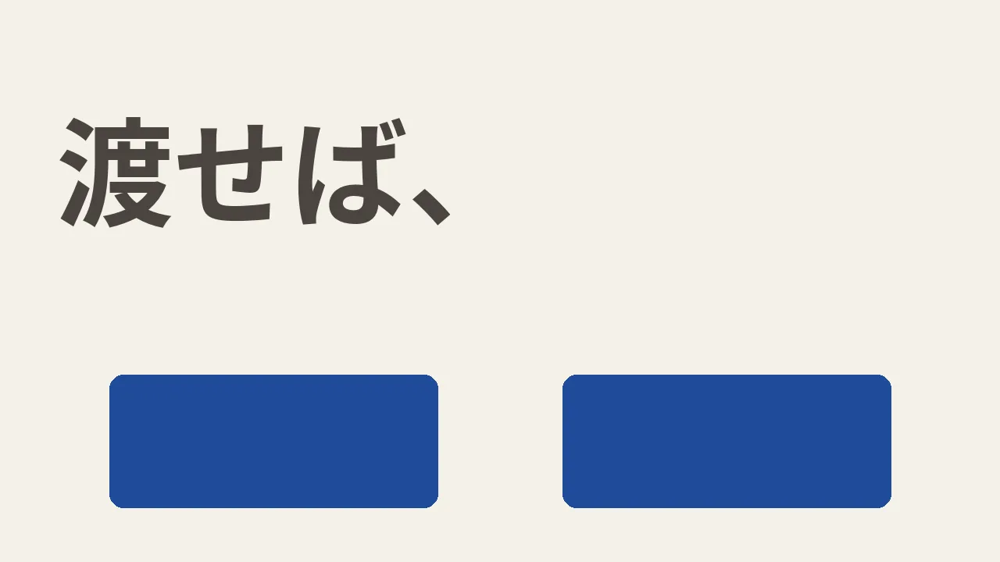

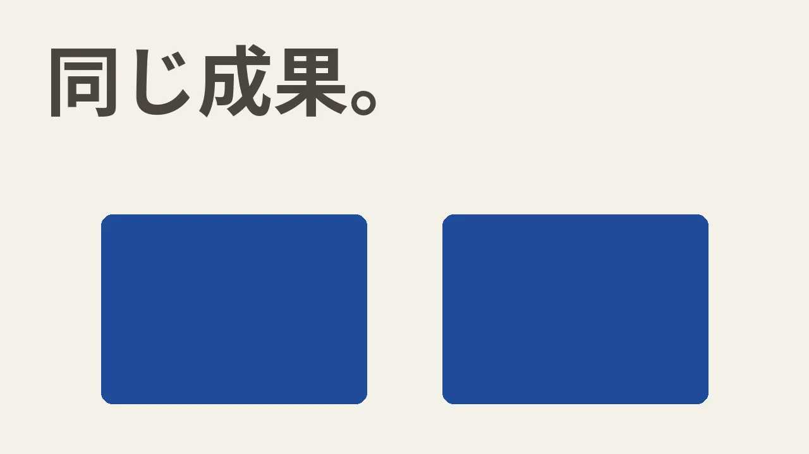
渡せば、
同じ成果。
作った仕組みを別の人に渡しても、同じ成果が出るとは限りません。2年間、そう見てきました。
はじめは左の巨大な1行と、下の対になった面。おわりは上の1行と、同じ大きさの面が二つ。灰は、まだ筆者の結論ではない印です。
使う人の、判断。
0:10–0:21 / 11秒 ・ 主張 ・ 声 52字／画面 22字

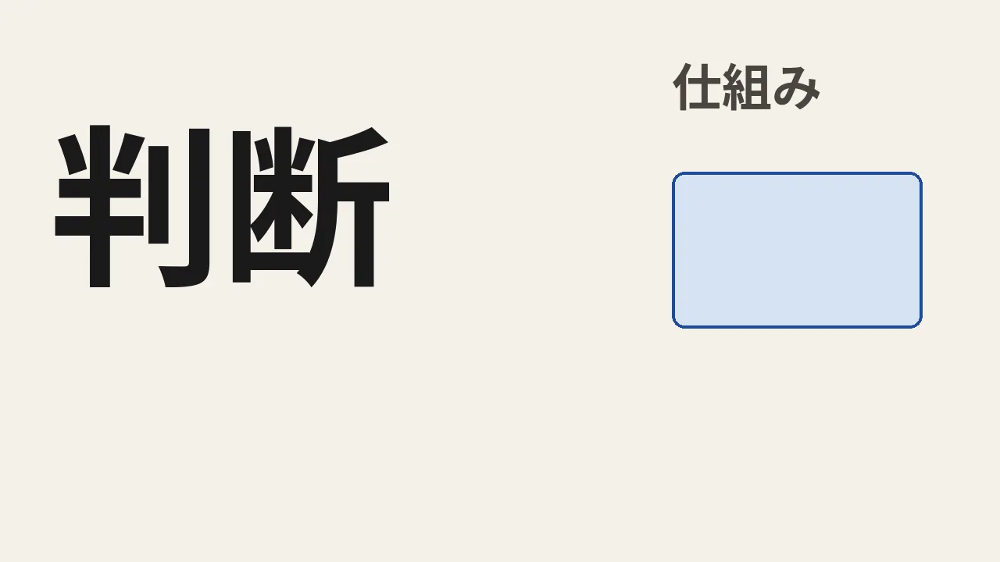

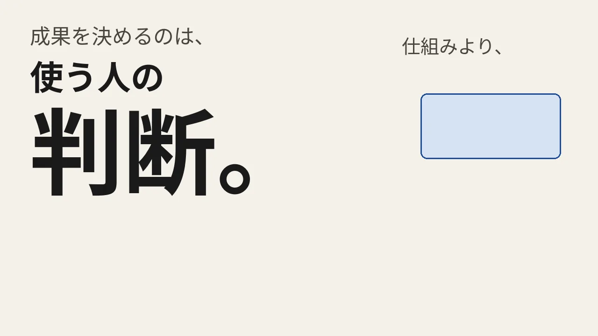
成果を決めるのは、
仕組みより、
使う人の判断。
成果を決めるのは、仕組みそのものより、使う人の判断です。出力の質は、指示を出す人の目と経験で決まります。
はじめは左の1語が画面の半分。おわりは左に3段、右に小さな語と薄い面。大きさが、主張の比重です。
主役は「判断。」。仕組みの面は残し、小さくする。仕組みを消して悪役にはしません。
- 0.0–1.2秒：01の隙間へ「判断」が scale 1.5→1.0 で着地する（E_SLAM）。
- 1.2–2.0秒：「成果を決めるのは、」が行のマスクから入る。
- 2.0–9.0秒：読む間、左の塊がゆっくり寄る（E_DRIFT）。右の面は奥へ下がり、文字の層とは速さが違う。
- 9.0–11秒：左の塊が上へ押し出され、03の帯になる（E_PUSH）。
6時間が、20分ほどに。 要判断 1
0:21–0:37 / 16秒 ・ 根拠の見せ場 ・ 声 66字／画面 10字

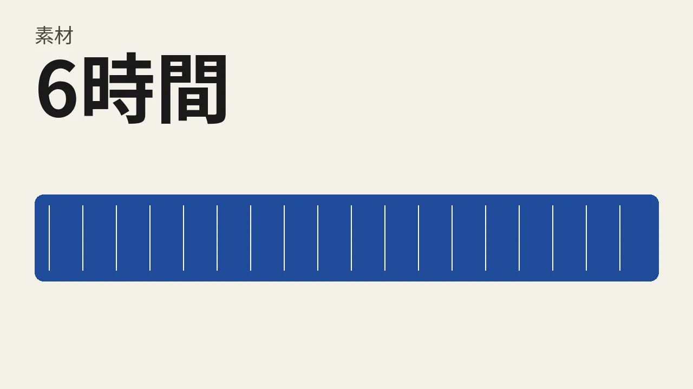

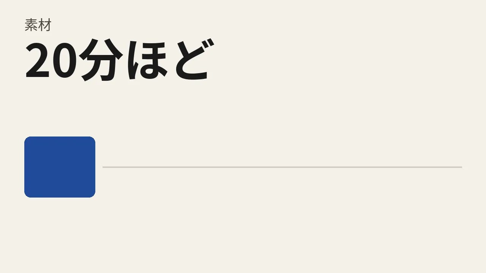
素材
6時間
20分ほど
映像のプロは、素材をAIに見せ、使えるところだけ選ばせていました。6時間から、20分ほどの映像が並びます。削るより、拾って、並べる。
はじめは上に巨大な「6時間」、下に画面幅の帯。おわりは上の語が「20分ほど」へ変わり、帯は左の短い塊になる。横長の重心が、点の重心へ縮む。
主役は「20分ほど」。6時間と20分ほどは、撮影素材の長さと、並べた映像の長さです。編集にかかった時間でも、20分00秒の計測でもありません。編集ソフトの画面は描きません。
- 0.0–2.0秒：図の層だけ Dolly in。ゆっくり2秒。帯が画面幅に着く。
- 2.0–10秒：帯の長さが縮む（E_SINK）。刻みの間隔が詰まる。「6時間」は上へ抜け、「20分ほど」が行マスクで入る。文字の形は崩さない。
- 10–16秒：残った帯を保ち、消えた長さは灰色の細い線になる。カメラは残った帯へ寄る。04で、帯がカードに割れる。
先に、集める。
0:37–0:47 / 10秒 ・ 根拠 ・ 声 45字／画面 34字

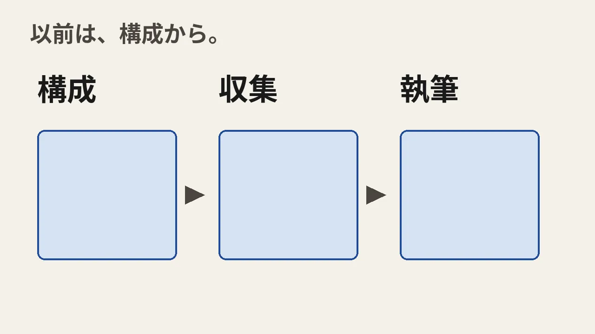

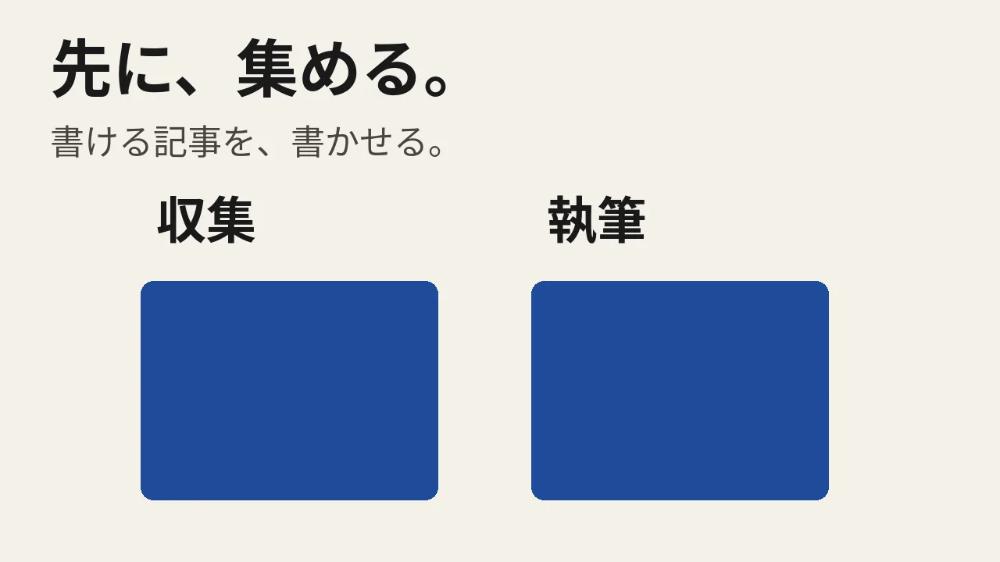
以前は、構成から。
構成
収集
執筆
先に、集める。
書ける記事を、書かせる。
以前は、構成を固めてから集めていました。いまは、先に集めて、書ける記事をAIに書かせます。
はじめは横一列の3枚。おわりは上の巨大な1行と、下の2枚。3枚から2枚へ、列の長さが変わる。
主役は「先に、集める。」。記事の紙面も、お客さんの名前も出しません。
- 0.0–1.0秒：03の短い帯が、横のカード3枚に割れる。
- 1.0–4.0秒：「以前は、構成から。」が行マスクで入る。カードの間を矢印が順に描かれる。
- 4.0–8.0秒：「構成」のカードが上へ抜け、収集と執筆が左へ寄る。「先に、集める。」が着地する（E_SLAM）。
- 8.0–10秒：2枚のカードが縦に倒れ、05のバーの太さへ変わる。
8割に、2割。 要判断 2
0:47–1:00 / 13秒 ・ 根拠 ・ 声 54字／画面 34字

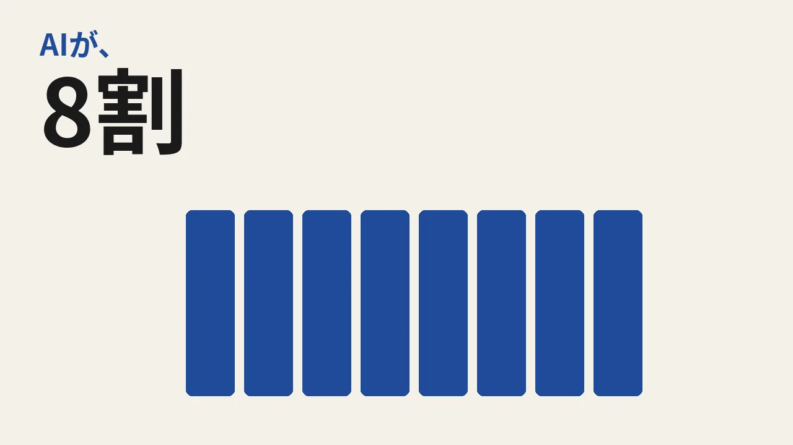

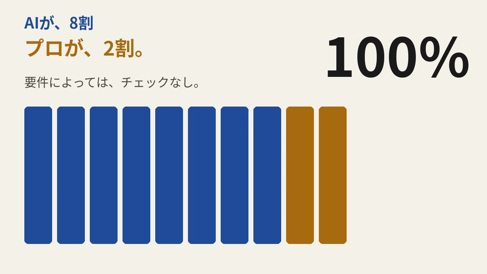
AIが、8割
プロが、2割。
完成の
100
要件によっては、チェックなし。
AIに8割を作らせ、最後の2割はプロが仕上げます。手放さないのは、何を残すかの判断と、仕上がりへの責任です。
はじめは左上の語と、中央の8本。おわりは左に2行、右上に巨大な「100」、下に10本。留保は灰の1行で、バーの上に残る。
主役は「100」。8本はAIが作る側、琥珀の2本はプロが手放さない側です。100は完成形の言い方で、達成率の測定値ではありません。パーセント記号は置きません。
- 0.0–2.0秒：04のカードが、同じ太さの縦のバー8本に立ち上がる（E_SLAM）。
- 2.0–7.0秒：「AIが、8割」が行マスク。読む間、バーの列ごとがゆっくり寄る（E_DRIFT）。文字は別の層。
- 7.0–10秒：琥珀の2本が上から落ち、列の右に収まって止まる。着地で「100」が着く（E_SLAM）。
- 10–13秒：灰の留保が行マスクで入る。列は完成したまま、06へ渡す。カメラは列の全長が見える高さへ引く。
同じ8割が、崩れる。 要判断 3
1:00–1:15 / 15秒 ・ 主張の見せ場 ・ 声 62字／画面 11字

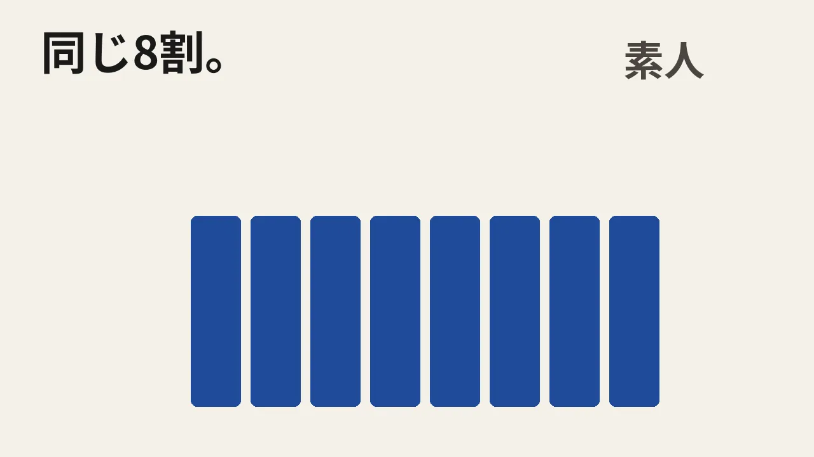

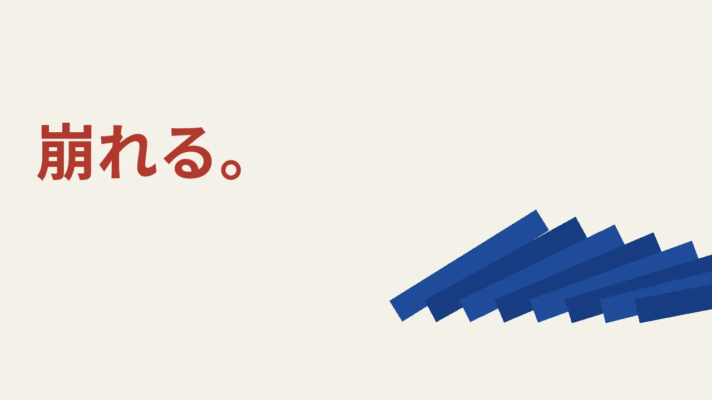
同じ8割。
素人
崩れる。
同じ道具を、経験のない人に渡しても、同じものは出てきません。熟練者が使って成果の出る仕組みは、経験のない人が使うと崩れます。
はじめは05と同じ横並びの8本。おわりは左の赤い巨大語と、右へ倒れた斜めの列。縦の並びが、斜めの流れに変わる。
主役は「崩れる。」。同じ8本の2回目で、結果だけが変わります。琥珀の2本は、このカットにはありません。人の姿は描きません。「素人」は、経験のない使い手の役割です。
- 0.0–3.0秒：琥珀の2本が上へ抜け、青い8本だけが残る。「同じ8割。」が行マスク。
- 3.0–8.0秒：「素人」の語が右上から寄る。バーはまだ立っている。読む間、列ごとが右へ流れる（E_DRIFT）。
- 8.0–8.5秒：倒れる瞬間だけ Whip pan 0.5秒（E_PUSH）。白は入れない。
- 8.5–15秒：8本が、左から順に右へ倒れる。角度はフレーム時刻から決める。「崩れる。」が左に着地する（E_SLAM）。倒れた列は戻さない。
誰が、使うか。
1:15–1:27 / 12秒 ・ 留保 ・ 声 53字／画面 31字

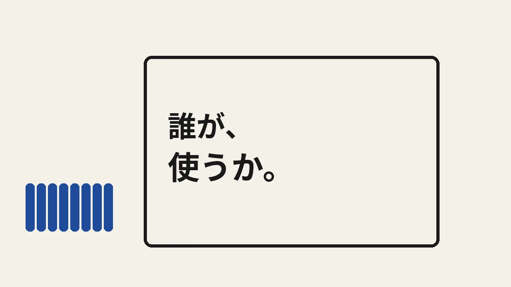

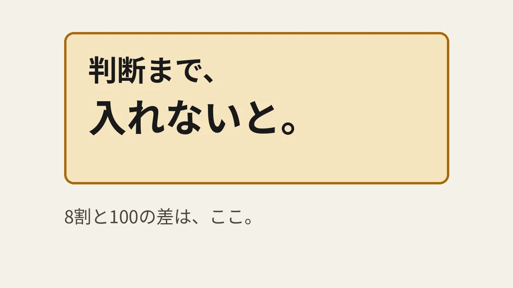
誰が、
使うか。
判断まで、
入れないと。
8割と100の差は、ここ。
誰が使うかを、先に決めます。中学生や高校生でも同じなら、本当にすごい。それには、判断まで全部入れ込みます。
はじめは右の大きな枠と、左の小さい列。おわりは枠が画面の上半分を占め、留保の1行が下に残る。中央の枠は、このカットだけです。
主役は「入れないと。」。中学生や高校生は声だけです。人物としては描きません。すごい、と言える条件を、弱い一般論にはしません。
- 0.0–2.0秒：倒れた8本が左へ集まり、枠の外に小さく立つ。枠が右から入る（E_SLAM）。
- 2.0–6.0秒：「誰が、使うか。」が枠の中へ行マスク。カメラは枠へ Dolly in。留保の区間も、枠ごとがゆっくり寄る（E_DRIFT）。
- 6.0–10秒：枠の内側が琥珀に変わり、「判断まで、入れないと。」が着地する。
- 10–12秒：下の1行が入る。枠の右辺が、08の境界線になる。
仕組みは、出さない。
1:27–1:41 / 14秒 ・ 主張 ・ 声 68字／画面 24字

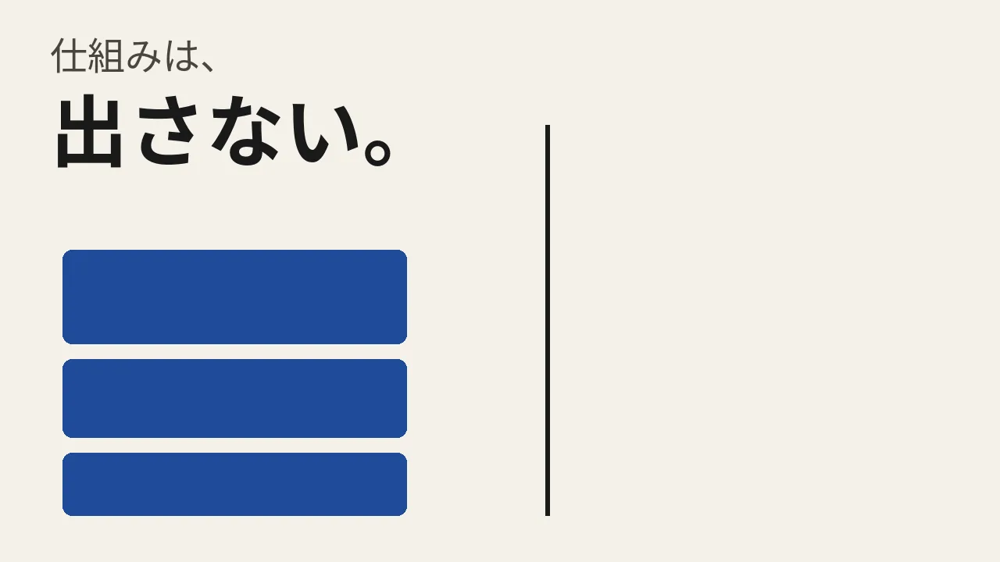

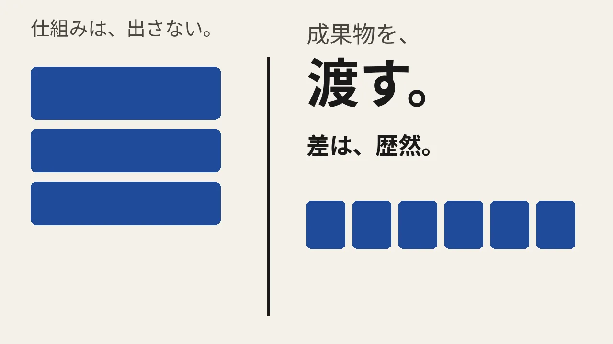
仕組みは、出さない。
成果物を、
渡す。
差は、歴然。
だから、仕組みは外に出さず、成果物だけを渡します。自分たちのための道具なら、止まっても我慢できます。外に出していないから、割り切れます。
はじめは左に語と積み、右は空。おわりは縦の線で左右が分かれ、右に巨大な「渡す。」と短い列。空だった側に、成果物だけが渡る。
主役は「渡す。」。左の積みは仕組みで、境界を越えません。右の短い列は、並べた成果物です。編集ソフトの画面は描きません。
- 0.0–2.0秒：07の枠の右辺が、画面の縦の境界になる。左に青い積みが出る。
- 2.0–6.0秒：「仕組みは、出さない。」が行マスク。読む間、積みの3枚が互い違いに上下へ流れる（E_DRIFT）。
- 6.0–11秒：短い列が境界を越えて右へ並ぶ。「渡す。」が着地する（E_SLAM）。
- 11–14秒：「差は、歴然。」が行マスク。列の先頭が、09の語の位置へ跳ぶ。
プロにしか、見えない。
1:41–1:54 / 13秒 ・ 留保 ・ 声 65字／画面 21字

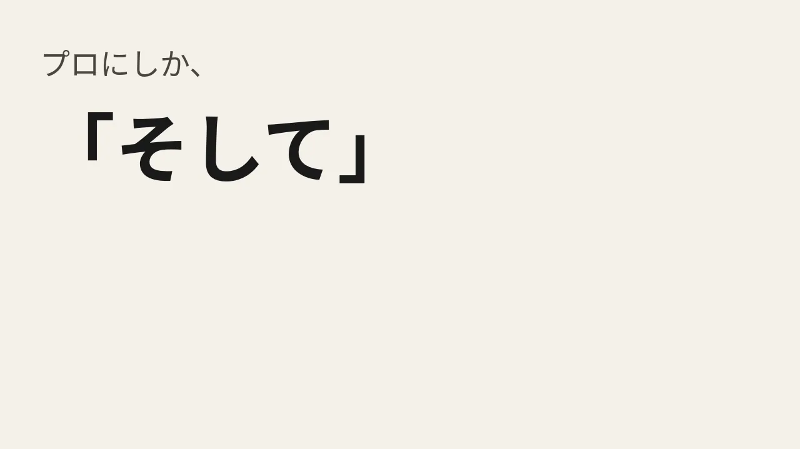

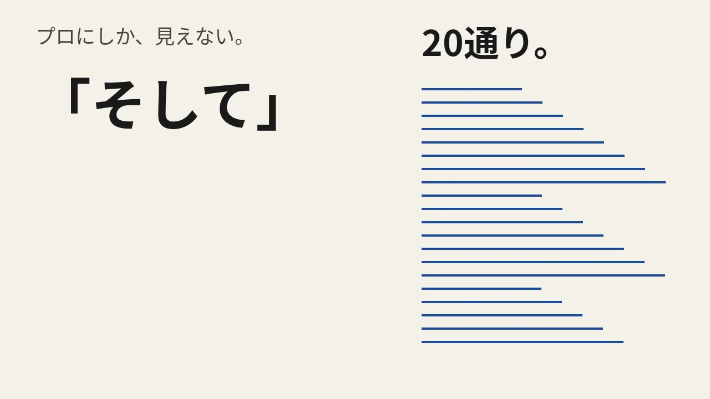
プロにしか、見えない。
「そして」
20通り。
私は、言葉のプロではありません。文章は読めても、読みにくさは言葉のプロの指摘で分かります。「そして」に、20通りある、と言います。
はじめは左の巨大な引用。おわりは左に引用、右に20本の線。引用の塊と、線の束で左右が分かれる。
主役は「そして」。20本は、読みの違いの比喩です。計測のグラフではありません。ナレーターの名前、金額、所属は出ません。
- 0.0–2.0秒：「そして」の塊が着地する（E_SLAM）。
- 2.0–8.0秒：20本の線が、上から1本ずつ描かれる。読む間、線の束が右へ流れ、語の塊は逆へ流れる（E_DRIFT）。
- 8.0–13秒：「20通り。」と「プロにしか、見えない。」が行マスク。線は描き終わった長さを保つ。10へ、線の束が二つの塊へ分かれる。
一心同体で、組む。
1:54–2:10 / 16秒 ・ 本人の結論 ・ 声 81字／画面 26字

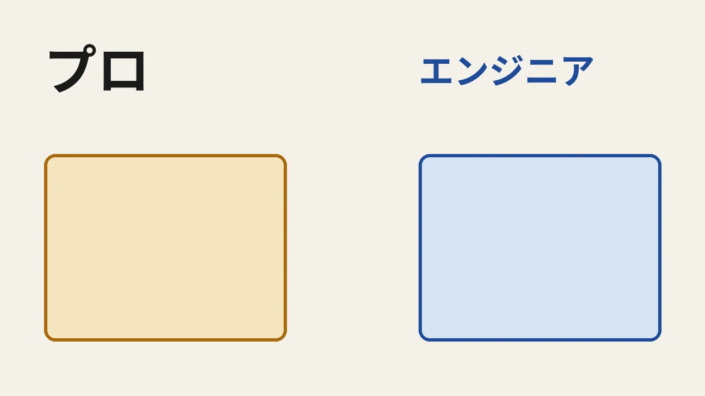

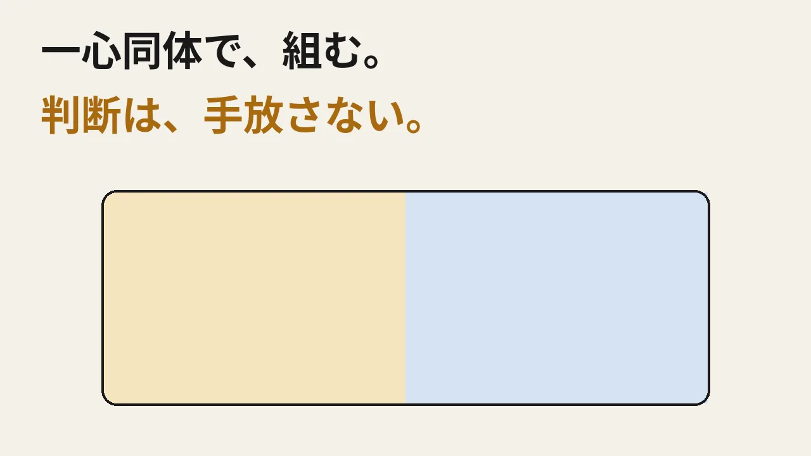
プロ
エンジニア
一心同体で、組む。
判断は、手放さない。
プロだけでは組めず、エンジニアだけでは良し悪しが分かりません。発注と受注では、たいていうまくいきません。一緒に考え、一緒に回す。判断は手放さず、成果物で渡します。
はじめは左右に離れた二つの面。おわりは上の2行と、下の一つの横長の塊。分かれていた重心が、一つに揃う。
主役は「手放さない。」。02の「判断」が、ここへ戻ります。問いかけでは終えません。人の姿は描きません。
- 0.0–3.0秒：二つの面が左右から入る（E_SLAM）。間に隙間が残る。
- 3.0–8.0秒：声の「発注と受注」の間、二つの面は近づいて、もう一度離れる。読む間も面は動く（E_DRIFT）。
- 8.0–12秒：二つの面が噛み合って一つの塊になる。「一心同体で、組む。」が行マスク。
- 12–16秒：「判断は、手放さない。」が着地する（E_SLAM）。塊ごとが上へ抜け、ライムの11へ Whip pan。
エンドロゴ
2:10–2:15.5 / 5.5秒 ・ 制作表示 ・ 声 0字／画面 0字

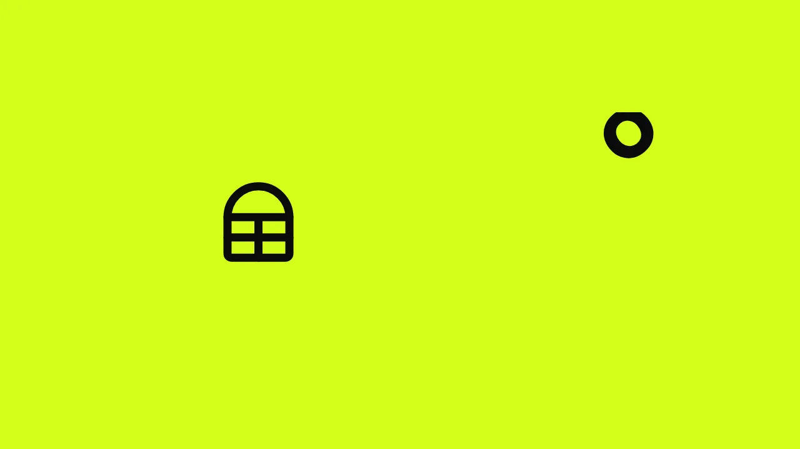

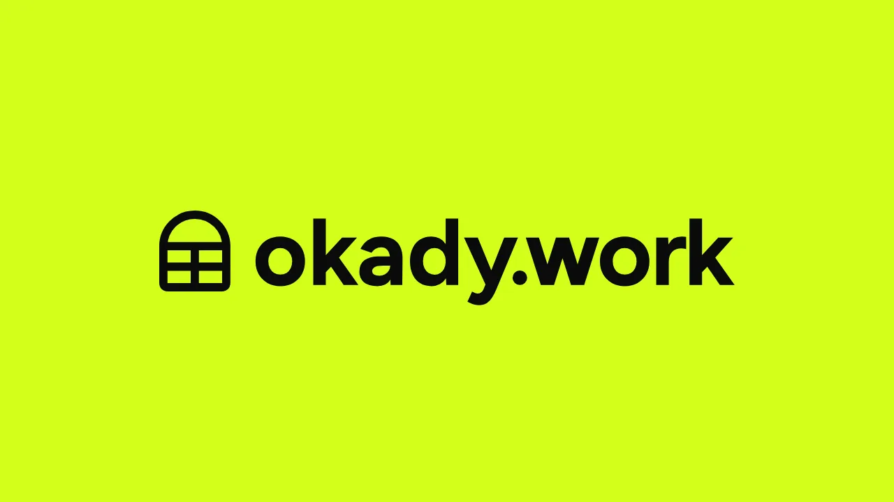
なし（ロゴのみ）
なし
ロゴ以外の要素を置かない。形、書体、色、比率は変えない。
ロゴは assets/logo/okady-work-logo.svg。本編からの切り替えだけ、勢いにしてよい。ロゴ自身の動きは、SVG のタイミングのままです。

- 10からの Whip pan で、ライムの面へ切り替える。
- 0.0–2.6秒：o が落ちてバウンドし、定位置へ。2.6–3.2秒：全体が左へスライド。3.0–4.0秒：「.work」が一文字ずつ出る。
- 4.0–5.5秒：完成形を1.5秒保持して終える。タイミングはフレーム時刻から再現する。
詳細（ここから下は補足）
ここまでで、どんな動画で、どう組み、どう見えるかを示しました。以下は、制作に必要な分担、デザイン、動き、素材、音、根拠、完成条件です。
声・文字・素材の分担
| 担当 | 受け持つこと | 受け持たないこと |
|---|---|---|
| 声 | 経緯、条件、留保、結論の文。なぜ同じものが出ないか、なぜ外に出さないか。 | 画面の語の読み上げ。全文字幕。 |
| 文字 | 思い込み、決め語、留保の短い語。語の大きさの差で、判断と仕組みの比重を見せる。 | ナレーションの全文。原稿にない数字。 |
| 図（帯とバー） | 長さが縮むこと、8割に2割が足されて止まること、同じ8本が倒れること。 | 説明の文。測定のグラフ。 |
| 写真・動画 | 使わない。帯とバーは、03から06まで同じモーショングラフィックスで描く。 | 生成映像。編集ソフトの画面。人物。 |
ナレーション案は、この企画の読み上げ原稿です。音声ファイルは作っていません。この企画書は、APIで音声を生成する許可ではありません。本編を作るとき、明示の範囲でこの案を原稿にします。画面の文字は、今の文量のままです。全文字幕は足しません。
主張・根拠・留保の対応
| 役割 | 内容 | カット |
|---|---|---|
| 主張 | 成果を決めるのは、仕組みより、使う人の判断。同じ仕組みでも、経験のない人が使うと崩れる。だから仕組みは外に出さず、成果物で渡す。 | 02・06・08・10 |
| 根拠 | 映像のプロは、6時間の素材から20分ほどの映像を並べる。記事も、先に集めて書けるものを書かせる。AIが8割を作り、プロが判断と責任の2割を仕上げる。言葉のプロには、「そして」に20通りが見える。 | 03・04・05・09 |
| 留保 | 同じ成果が出るとは限らない、という見た範囲。要件によってはチェックなしで出せる。同じ力の人、判断まで入れ込んだ仕組みなら別。中学生や高校生でも同じなら、本当にすごい。外に出していないから、止まっても割り切れる。発注と受注では、たいていうまくいかない。筆者は言葉のプロではない。 | 01・05・07・08・09・10（声または文字で残す） |
| 最後に残す本人の結論 | 一緒に考え、一緒に回す。判断は手放さず、成果物で渡す。 | 10 |
対応の全文は references.md です。
企画側／制作側
| 企画側（この一式） | 制作側 |
|---|---|
| 主張の一文、構成と尺、画面の文言、ナレーション案、絵コンテ22枚、字組みと色、動きの狙い、ロゴ、根拠の対応 | three.js と DOM の文字層による実装、動きの細かな値、BGM と効果音、明示の範囲でのナレーション、書き出し |
| 絵コンテの文字が、安全域の外に出ていないこと、図と重なっていないこと（確認済み。下の完成条件） | 本編の文字のはみ出しと重なり。全カット、0.25秒ごと。1920基準で左右64px、上下48px |
完了の分け方は、企画と絵コンテとロゴは準備済み、音声と本編は制作側、です。画像と動画の実ファイルは使わない、という判断をこの指示書に書いてあります。その不足を理由に着手を戻さなくてよいです。音源ファイルがまだ無いことも、着手を止める理由にしません。
@remotion/three の three.js。帯、バー、カメラは three.js の層。文字は DOM／CSS の層（行のマスク、詰め組）です。カメラの寄りと Whip pan は図の層だけに掛け、文字が切れたりバーに埋もれたりしないようにします。requestAnimationFrame の実時間計算と、シークで結果が変わる物理シミュレーションは使いません。3Dを使う理由は、縮む帯と倒れるバーを、カメラの寄りと振りと一緒に奥行きで見せるためです。- 章の表示、テロップの帯、エンドクレジットは入れない。映像の中にカット番号を入れない。
- 名前、所属、他社のロゴ、製品の UI、実在の人物は出さない。
- 書体は Noto Sans JP。ファイルは同梱しない。制作側が OFL のものを用意する。
デザインシステム（映像の文字・色・グリッド）
本編の配色です。企画書の見た目とは別です。ライムはエンドロゴの画面だけに使います。
タイプスケール（1920×1080・参考値）
| 段 | 大きさ | 太さ | 用途 |
|---|---|---|---|
| Display | 200–280px | 900 | 判断。100。崩れる。6時間。20分ほど |
| H1 | 120–160px | 700 | 各カットの決め語 |
| Body | 48–64px | 400 | 留保、思い込み、補足の1行 |
1画面に使う段は3つまでです。カットごとに、主役の段を変えます。
グリッドと、カットごとの組み
12列。1920基準の左右余白は96px。安全域は左右64px、上下48px。左揃えを基本にし、中央の枠は07だけです。
- 01は、下に対になった面。02は、左の巨大な語と右の小さい語。
- 03は、画面幅の横帯。04は、横に並ぶカード。
- 05は、等間隔の縦棒。06は、同じ棒が斜めに倒れる。
- 07は、中央の枠。08は、縦の境界で左右に割る。
- 09は、左の引用と右の線。10は、二つの面が一つの横長になる。
色
紙 #F4F1EA 背景。墨 #1A1A1A 本文と結論。灰 #4A453F 思い込みと留保。青 #1F4B99 仕組みが扱うもの。琥珀 #A86A10 人が手放さないもの。赤 #B0382C 崩れた状態と「崩れる。」だけ。ライム #d2ff1a エンドロゴの背景だけ。
薄い青と薄い琥珀は、同じ意味の地です。新しい記号にはしません。
動きの言語
| 名前 | イージング（参考値） | 使う所 |
|---|---|---|
| E_SLAM「叩く」 | cubic-bezier(.16,1,.3,1)、0.4–0.6秒 | 決め語の着地、バーが立つ、2本が収まる |
| E_SINK「縮む」 | cubic-bezier(.65,0,.35,1) | 03の帯が短くなる。重さのある加減速 |
| E_PUSH「押し出す」 | cubic-bezier(.55,0,1,.45)、0.3–0.5秒 | 次のカットへ渡す動き。06の Whip pan は0.5秒 |
| E_DRIFT「読む間の流れ」 | linear（そのカットの読む間） | 行の塊、バーの列、カメラ。字形は崩さない |
- リズムの目安は118–124 BPM。決め語の着地は拍の頭。曲が決まったら、秒を拍へ寄せてよいです。秒は参考値です。
- 大きな動きは、03の縮み、05の2本、06の倒れ、10の噛み合いです。読む間も、塊と列とカメラを動かします。1文字ずつの揺れ、拍ごとの脈動、散る登場は使いません。
- 03の最初は Dolly in を2秒、ゆっくり。06の倒れる瞬間だけ Whip pan を0.5秒。白の閃光は入れません。
- フェードだけの切り替えはしません。つなぎは、マッチ、押し出し、Whip pan のいずれかです。
- 倒れる角度と、落ちる2本の位置は、フレーム時刻から直接計算します。
記号と色
| 記号 | 意味（これ以外に使わない） | 出るカット |
|---|---|---|
| 同じ形の青い面が二つ | 渡せば同じ成果が出る、という思い込み | 01 |
| 青い横帯 | 素材の長さ。縮むと、AIが並べた区間 | 03・04（カードへ） |
| 青い縦バー ×8 | AIが作る8割 | 05・06・07（小さく） |
| 琥珀の縦バー ×2 | プロが仕上げる2割。判断と責任 | 05 |
| 墨の「100」 | 完成形の言い方。測定値ではない | 05 |
| 赤と、右へ倒れたバー | 経験のない人が使うと、成果が崩れる | 06 |
| 灰の文字 | 思い込み、留保、「ほど」 | 01・02・03・04・05・06・08・09 |
| 枠 | 誰が使うかを、先に決める口 | 07 |
| 縦の境界線 | 手元に残す仕組みと、外に渡す成果物の境 | 08 |
| 短い青い列 | 渡す成果物。仕組みそのものではない | 08 |
| 長さの違う線 ×20 | 「そして」の読みの違い。その人の話。計測ではない | 09 |
| 二つの面が一つの塊 | プロとエンジニアが、一心同体で組む | 10 |
青は、仕組みが扱うものだけです。琥珀は、人が手放さないものだけです。赤は、崩れた状態と「崩れる。」だけです。灰は、思い込みと留保だけです。
キャラ設定
人物・顔・手は出ません。役は、語と色で通します。
- プロ：琥珀。2本を足し、判断を手放さない。姿は描かない。映像のプロと言葉のプロは、声の中の役割です。名前も所属も出しません。
- 素人：灰の語。06で、8本を倒す側。姿は描かない。筆者が自分を素人と呼ぶ結びは、この語と意味が割れるので使いません。
- エンジニア：青の語。10で、プロと一つの塊になる。姿は描かない。
差し替え候補 要判断 4
未承認現行は、タイムラインのモーショングラフィックスです。生成はしていません。
候補は、明るいスタジオで、机の上にフィルムの帯が流れ込み、数本だけが抜き出されて一列に並ぶ、4秒の映像です。置くなら03の「6時間が20分ほどに」の直後、全面のインサートです。声は続け、インサートの間は文字を退け、短い帯の画面へ戻ります。小さな窓にはしません。
帯とバーは03から06まで続きます。03の帯だけを別の質感にして、そのまま常設することはしません。クレジットの見積もりは未確認です。承認のあと、企画側が実ファイルと区間を用意します。承認の前に、制作側はこの映像を作りません。
素材
| ファイル | 役割 | 使う所 |
|---|---|---|
assets/storyboard/cut-XX-start.webp／cut-XX-end.webp（22枚、1280×720） | 構図と動きの絵コンテ | 各カット |
assets/logo/okady-work-logo.svg | エンドロゴ。形と色は変えない | 11 |
写真も、生成した動画も、フォントファイルも同梱していません。新しい画像と動画は、この指示では使いません。
音
未制作BGMは、この作品のために作ります。過去の作品の曲を、検討なしに使いません。
方向は、乾いたキック、短いベース、輪郭のあるプラックです。目安は118–124 BPM。03の帯が着地する所、05の100が止まる所、06の倒れる所にアクセントを置きます。06の Whip pan の前に、0.3秒だけ音を抜いてよいです。長い無音では埋めません。遅い曲に合わせて、映像の動きを弱めません。
BGMはエンドロゴの終わり（2:15.5）まで覆い、保持の1.5秒で収めます。効果音は、2本が収まる音と、バーが倒れる音を任意で足してよいです。ファイルはまだありません。
ナレーションは、各カットの案を原稿にします。声の選定は制作側です。読みが割れやすい語は、かなで渡してよいです。8割（はちわり）、2割（にわり）、20分（にじっぷん）、20通り（にじゅっとおり）。「そして」はそのまま読みます。この企画書は、音声生成の許可ではありません。
有料の音楽生成を比較するときは、品質、時間、費用の理由を一行残して選びます。料金が未確認の生成はしません。候補の名は、Lyria 3.5（GEMINI_API_KEY）です。実行時に、モデルIDと提供状況と料金を確認します。キーの値は、コードにもこの指示にも書きません。
根拠
主張、根拠、留保、画面の文言の対応は references.md です。数字が何の指標かも、そこに書いてあります。効果の採否は effects-direction.md です。このページには、採用する動きの狙いだけを残しています。
完成条件・確認状態
- 01と02、そして10だけで、主張と結論が伝わる。10は本人の言葉で閉じる。
- 05の「チェックなし」、07の「誰が使うか」、08の「止まっても割り切れる」、09の「言葉のプロではない」、10の「発注と受注ではたいていうまくいかない」が、声または文字で残る。
- 03で帯が縮み、05で同じ系統の8本に2本が足されて止まり、06で同じ8本が倒れる。
- 全編で画面全体が動き、フェードだけの切り替えや、同じ登場の連続に戻らない。文字の形は崩さない。
- 章の表示、テロップの帯、エンドクレジット、カット番号は、映像に入らない。
- エンドロゴは、ライムの全面、中央、SVGのタイミング、1.5秒の保持。
- 絵コンテ22枚を機械で見た。1280×720。安全域は左右48px、上下36px。範囲の外に出た文字は0。文字どうしの交差は0。文字と図形の交差は0。枠は線の外接だけを図形とし、枠の内側の文字とは交差していない。エンドロゴの字形は、画面の文字レイヤーではないので、この検査の対象外。ロゴの画面に、ロゴ以外の文字はない。
- 本編の文字検査は制作側。0.25秒ごと。1920基準で左右64px、上下48px。バーと境界線の外接も取る。
- 実速再生は未確認。本編は未制作。冒頭（01–03）、中盤（05–06）、後半（10–11）を等速で見てから、全編と音を確認する。絵コンテの検査は、動きの合格ではない。